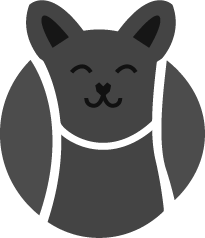
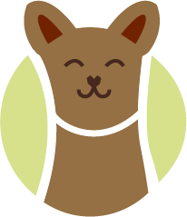
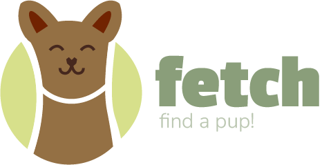

This logo is a pictorial depiction of a dog in the shape of a tennis ball. The logomark is accompanied by our
main typography we have used in our web app - Passion One and Nunito. The Passion one font is used for "Fetch"
to display the brand name boldy whereas Nunito is used to accompany it with our tagline explaining the company
premise. The font style and logo are friendly and playful, yet not too childish to appeal to our older audience.
We wanted to utilize the perfect balance of readability and contrast with our colour and font choices.
Black and White logo
The foundations of our icon and logomark in black and white. These are not to be used in the webapp, but as reference
when adjusting the logo.

Standard Coloured Logos
The main logos to be used most often containing an icon, stacked and horizontal logo.


Alternate Logos
The "Fetch Green" has good contrast on most background colours - except for a mid gray. On occasions where the
text is not visible these alternate logos can be used.
Logo sizing
A guide to sizing the logos